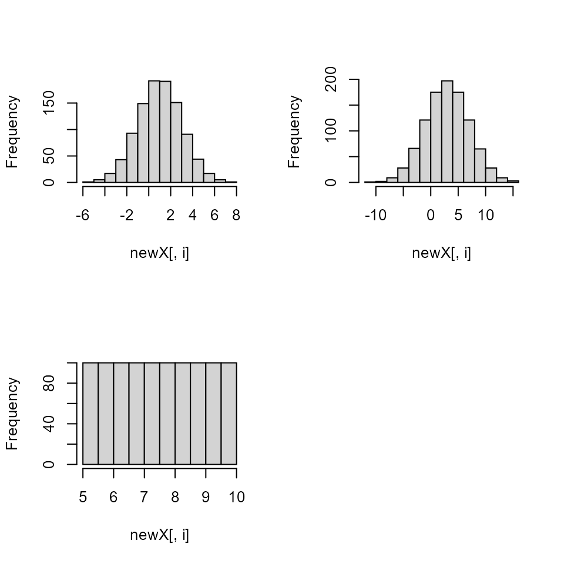
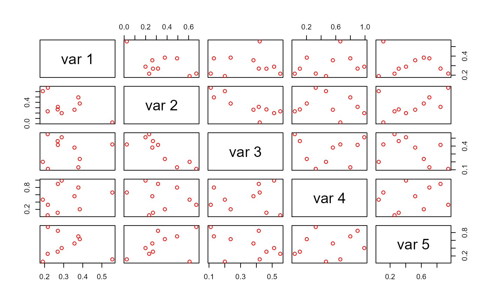
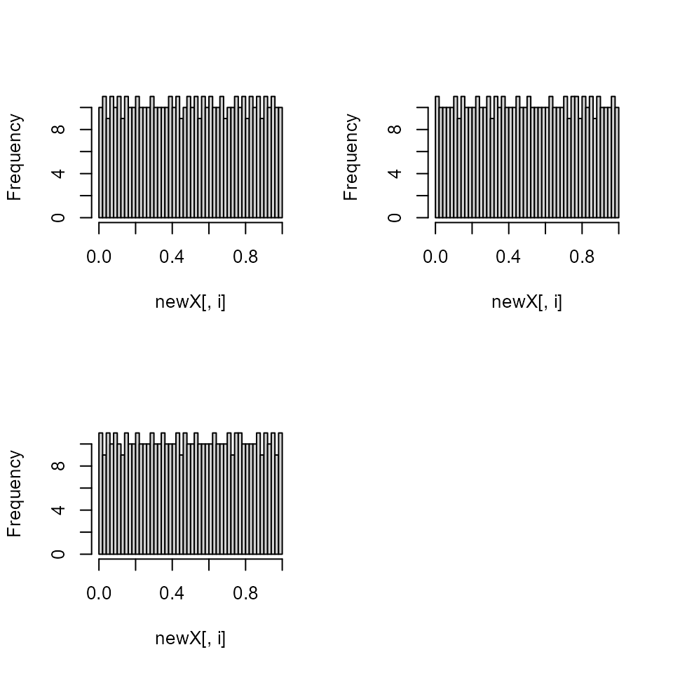
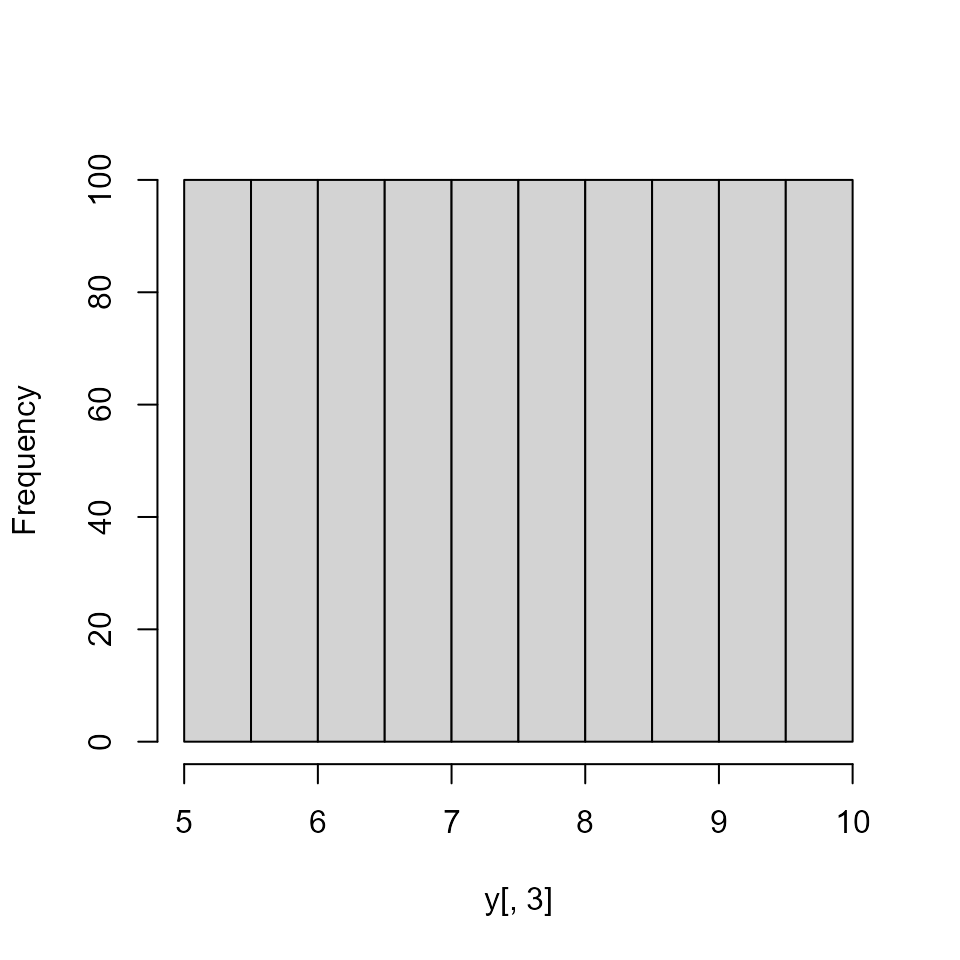

Latin Hypercube Samples - Questions
Rob Carnell
2021-09-06
Source:vignettes/lhs_faq.Rmd
lhs_faq.RmdQuestion 1
I am looking for a package which gives me latin hyper cube samples from a grid of values:
a <- (1:10)
b <- (20:30)
dataGrid <- expand.grid(a, b)Answer
The lhs package returns a uniformly distributed stratified sample from the unit hypercube. The marginal distributions can then be transformed to your distribution of choice. If you wanted a uniform Latin hypercube on [1,10] and [20,30] with 22 samples, you could do:
X <- randomLHS(22, 2)
X[,1] <- 1 + 9*X[,1]
X[,2] <- 20 + 10*X[,2]
# OR
Y <- randomLHS(22, 2)
Y[,1] <- qunif(Y[,1], 1, 10)
Y[,2] <- qunif(Y[,2], 20, 30)
head(X)
#> [,1] [,2]
#> [1,] 5.681035 21.73347
#> [2,] 7.440464 24.99314
#> [3,] 5.124658 21.08900
#> [4,] 6.274872 20.01738
#> [5,] 3.860701 23.33944
#> [6,] 2.357909 22.86173
head(Y)
#> [,1] [,2]
#> [1,] 7.924432 24.13663
#> [2,] 7.139062 25.32379
#> [3,] 8.483899 26.75699
#> [4,] 5.756974 27.06118
#> [5,] 8.006960 24.93194
#> [6,] 2.397084 20.64365If you want integers only in the sample, then we must be careful about what we mean by a Latin hypercube sample. If you wanted exactly 3 points, then you could divide up the range [1,10] into three almost equal parts and sample from 1:3, 4:6, and 7:10. The problem is that it wouldn’t be uniform sample across the range. (7 would be sampled less often than 2 for example)
To do a Latin hypercube sample on the intgers, you should have a number of integers on the margins which have the number of points sampled as a common factor. For example if you sample 3 points from 1:9, and 21:32 then you could sample as follows:
a <- c(sample(1:3,1), sample(4:6, 1), sample(7:9, 1))
b <- c(sample(21:24,1), sample(25:28, 1), sample(29:32,1))and then randomly permute the entries of a and b.
Or more generally, take n samples from the list of integer groups:
integerLHS <- function(n, intGroups)
{
stopifnot(all(lapply(intGroups, function(X) length(X) %% n) == 0))
stopifnot(require(lhs))
stopifnot(is.list(intGroups))
ranges <- lapply(intGroups, function(X) max(X) - min(X))
A <- matrix(nrow = n, ncol = length(intGroups))
for (j in 1:length(ranges))
{
sequ <- order(runif(n))
if (length(intGroups[[1]]) > 1)
{
spacing <- intGroups[[j]][2] - intGroups[[j]][1]
} else stop("must have more than 1 intGroup")
for (k in 1:n)
{
i <- sequ[k]
a <- min(intGroups[[j]]) + (i - 1)*(ranges[[j]] + spacing)/n
b <- min(intGroups[[j]]) + i*(ranges[[j]] + spacing)/n - 1
if (a < b)
{
A[k,j] <- sample(seq(a,b,spacing), 1)
} else if (a == b)
{
A[k,j] <- a
} else stop("error")
}
}
return(A)
}
integerLHS(10, list(1:10, 31:40))
#> [,1] [,2]
#> [1,] 2 38
#> [2,] 8 33
#> [3,] 6 40
#> [4,] 10 39
#> [5,] 9 36
#> [6,] 1 31
#> [7,] 3 32
#> [8,] 4 34
#> [9,] 7 35
#> [10,] 5 37
integerLHS(5, list(1:10, 31:40))
#> [,1] [,2]
#> [1,] 10 36
#> [2,] 4 31
#> [3,] 6 37
#> [4,] 2 40
#> [5,] 7 33
integerLHS(2, list(1:10, 31:40))
#> [,1] [,2]
#> [1,] 7 31
#> [2,] 5 39
integerLHS(5, list(1:20, 31:60, 101:115))
#> [,1] [,2] [,3]
#> [1,] 4 41 109
#> [2,] 14 35 110
#> [3,] 11 54 103
#> [4,] 20 43 113
#> [5,] 6 56 106
integerLHS(5, list(seq(2,20,2), 31:60, 101:115))
#> [,1] [,2] [,3]
#> [1,] 4 51 103
#> [2,] 16 46 111
#> [3,] 10 32 113
#> [4,] 6 38 106
#> [5,] 18 60 107Question 2
I am trying to do a Latin Hypercube Sampling (LHS) to a 5-parameter design matrix. I want the combination of the first three parameters to sum up to 1 (which obviously do not)
If I divide each of these parameters with the sum, the uniform distribution is lost. Is there a way to maintain the random LHS (with uniformly distributed parameters) so that the refered condition is fulfilled?
Answer
In my experience with Latin hypercube samples, most people draw the sample on a uniform hypercube and then transform the uniform cube to have new distributions on the margins. The transformed distributions are not necessarily uniform. It is possible to draw a Latin hypercube with correlated margins and I hope to add that to my package in the future. I have also done transforms such that the transformed marginal distributions are correlated (as you have in your example). I have not seen a correlated set of uniform marginal distributions such that the margins sum to one, however. I’ll make a quick example argument that explains the difficulty…
In two dimensions, you could draw this which is uniform and correlated.
x <- seq(0.05, 0.95, length = 10)
y <- 1 - x
all.equal(x + y, rep(1, length(x)))
#> [1] TRUE
hist(x, main = "") 
hist(y, main = "") 
But in three dimensions, it is hard to maintain uniformity because large samples on the first uniform margin overweight the small samples on the other margins.

hist(y, main = "") 
hist(z, main = "") 
The commmon practice in your situation is draw the K parameters together as a uniform Latin hypercube on 0-1 and then transform the margins of the hypercube to the desired distributions.
Easy Example * Parameter 1: normal(1, 2) * Parameter 2: normal(3, 4) * Parameter 3: uniform(5, 10)
N <- 1000
x <- randomLHS(N, 3)
y <- x
y[,1] <- qnorm(x[,1], 1, 2)
y[,2] <- qnorm(x[,2], 3, 4)
y[,3] <- qunif(x[,3], 5, 10)
par(mfrow = c(2,2))
dummy <- apply(x, 2, hist, main = "")
par(mfrow = c(2,2)) 
dummy <- apply(y, 2, hist, main = "") 
The transformed distributions maintain their “Latin” properties, but are in the form of new distributions.
In your case, you’d like the first three columns to be transformed into a correlated set that sums to one. Still follow the pattern…
x <- randomLHS(N, 5)
y <- x
y[,1] <- x[,1]/rowSums(x[,1:3])
y[,2] <- x[,2]/rowSums(x[,1:3])
y[,3] <- x[,3]/rowSums(x[,1:3])
y[,4] <- x[,4]
y[,5] <- x[,5]
par(mfrow = c(2,3))
dummy <- apply(x, 2, hist, main = "")
par(mfrow = c(2,3)) 
The uniform properties are gone as you can see here…

pairs(y, col = "red") 
But, the “Latin” properties of the first three margins are maintained as in this smaller example…
N <- 10
x <- randomLHS(N, 5)
y <- x
y[,1] <- x[,1]/rowSums(x[,1:3])
y[,2] <- x[,2]/rowSums(x[,1:3])
y[,3] <- x[,3]/rowSums(x[,1:3])
y[,4] <- x[,4]
y[,5] <- x[,5]
pairs(x) 
pairs(y, col = "red") 
Question 3
How do I create a Latin hypercube that ranges between between 0 and 1 and sums to 1?
Answer
I have an imperfect solution to this problem using a Dirichlet distribution.
The Dirichlet seems to keep the range of the values larger once they are normalized. The result is not uniformly distributed on (0,1) anymore, but instead is Dirichlet distributed with the parameters alpha. The Latin properties are maintained.
qdirichlet <- function(X, alpha)
{
# qdirichlet is not an exact quantile function since the quantile of a
# multivariate distribtion is not unique
# qdirichlet is also not the quantiles of the marginal distributions since
# those quantiles do not sum to one
# qdirichlet is the quantile of the underlying gamma functions, normalized
# This has been tested to show that qdirichlet approximates the dirichlet
# distribution well and creates the correct marginal means and variances
# when using a latin hypercube sample
lena <- length(alpha)
stopifnot(is.matrix(X))
sims <- dim(X)[1]
stopifnot(dim(X)[2] == lena)
if (any(is.na(alpha)) || any(is.na(X)))
stop("NA values not allowed in qdirichlet")
Y <- matrix(0, nrow = sims, ncol = lena)
ind <- which(alpha != 0)
for (i in ind)
{
Y[,i] <- qgamma(X[,i], alpha[i], 1)
}
Y <- Y / rowSums(Y)
return(Y)
}
X <- randomLHS(1000, 7)
Y <- qdirichlet(X, rep(1,7))
stopifnot(all(abs(rowSums(Y) - 1) < 1E-12))
range(Y)
#> [1] 2.701015e-05 7.691528e-01
ws <- randomLHS(1000, 7)
wsSums <- rowSums(ws)
wss <- ws / wsSums
stopifnot(all(abs(rowSums(wss) - 1) < 1E-12))
range(wss)
#> [1] 1.226865e-05 6.191527e-01Question 5
I need to use Latin hypercube sampling for my own custome functions.
Answer
require(lhs)
# functions you described
T1 <- function(t) t*t
WL1 <- function(T1, t) T1*t
BE1 <- function(WL1, T1, t) WL1*T1*t
# t is distributed according to some pdf (e.g. normal)
# draw a lhs with 512 rows and 3 columns (one for each function)
y <- randomLHS(512, 3)
# transform the three columns to a normal distribution (these could be any
# distribution)
t <- apply(y, 2, function(columny) qnorm(columny, 2, 1))
# transform t using the functions provided
result <- cbind(
T1(t[,1]),
WL1(T1(t[,2]), t[,2]),
BE1(WL1(T1(t[,3]), t[,3]), T1(t[,3]), t[,3])
)
# check the results
# these should be approximately uniform
par(mfrow = c(2,2))
dummy <- apply(y, 2, hist, breaks = 50, main = "")
# these should be approximately normal
par(mfrow = c(2,2)) 
dummy <- apply(t, 2, hist, breaks = 50, main = "")
# these should be the results of the functions
par(mfrow = c(2,2)) 
dummy <- apply(result, 2, hist, breaks = 50, main = "") 
Question 6
I need a Latin hypercube sample on an integer set or a set of colors.
Answer
N <- 1000
set.seed(1919)
x <- randomLHS(N, 4)
y <- x
# uniform on 1-10
y[,1] <- ceiling(qunif(x[,1], 0, 10))
# three colors 1,2,3
y[,2] <- ceiling(qunif(x[,2], 0, 3))
# other distributions
y[,3] <- qunif(x[,3], 5, 10)
y[,4] <- qnorm(x[,4], 0, 2)
par(mfrow=c(2,2))
dummy <- apply(x, 2, hist, main="") 
par(mfrow=c(2,2))
plot(1:10, c(table(y[,1])), type="h", col="blue", lwd=2, ylim=c(0,120),
ylab="Frequency", xlab="y[,1]")
plot(1:3, c(table(y[,2])), type="h", col="blue", lwd=2, ylim=c(0,400),
ylab="Frequency", xlab="y[,2]")
hist(y[,3], main="")
hist(y[,4], main="") 
# change to color names
z <- as.data.frame(y)
z[,2] <- factor(y[,2], labels=c("R","G","B"))
z[1:10,]
#> V1 V2 V3 V4
#> 1 9 R 9.944182 2.94805877
#> 2 4 R 8.530678 -0.19388895
#> 3 8 G 8.095066 -0.89251244
#> 4 4 G 8.198067 -0.45032286
#> 5 10 G 6.523280 -4.09957931
#> 6 10 B 6.227534 -0.05631367
#> 7 2 B 7.177990 3.84640466
#> 8 8 G 6.881714 0.58980996
#> 9 9 G 7.111466 0.45285007
#> 10 2 R 6.172652 1.93023633